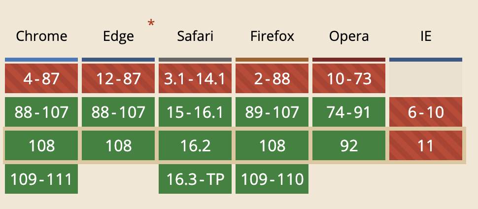
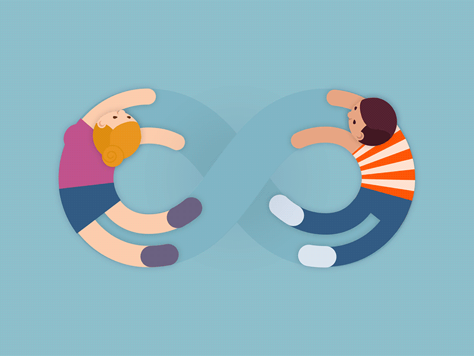
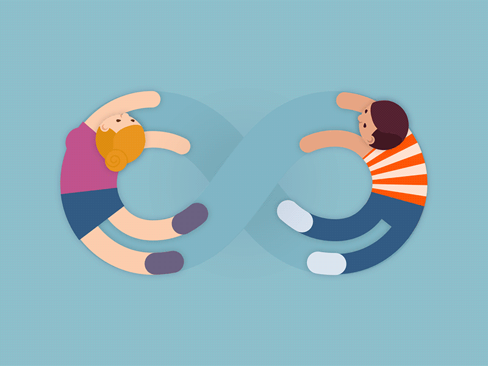
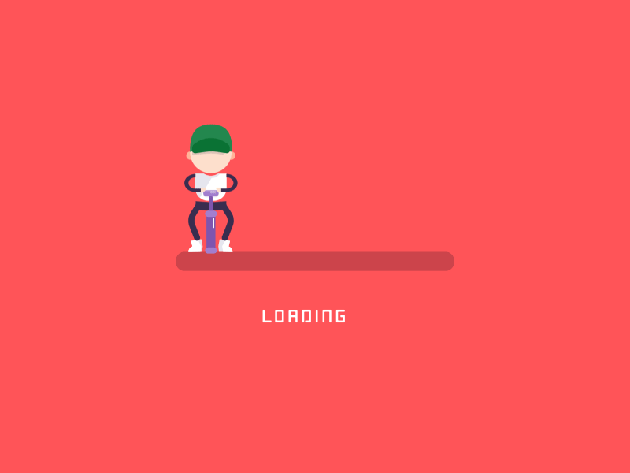
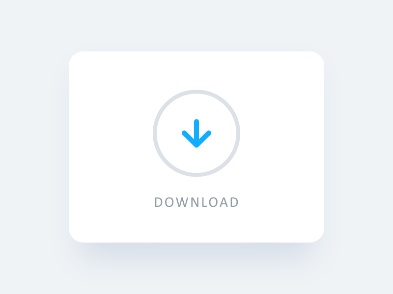
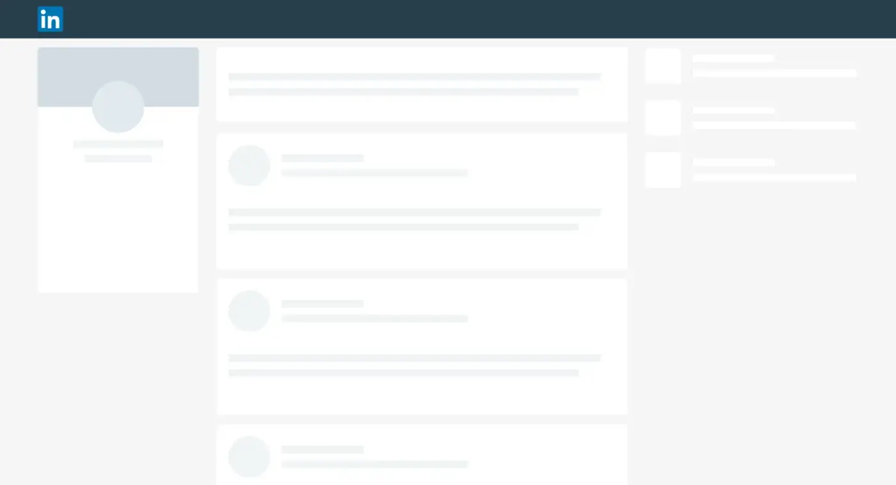
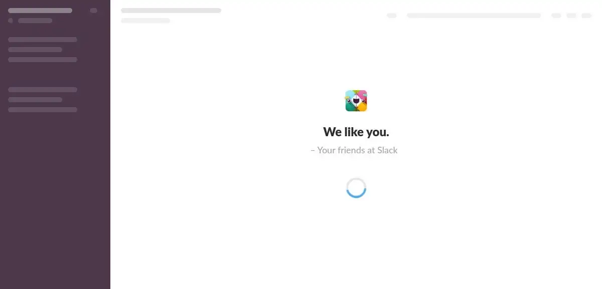
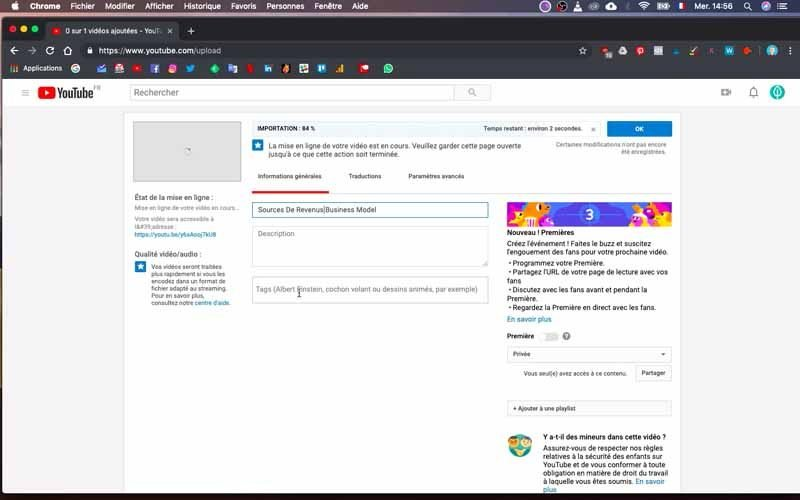

Rendre son site plus performant 🚀

Katia Moreira
MMI 2 - 27/01/2023
Plan du cours
- 📏 La performance et comment la mesurer
- 📋 Les différentes métriques
- 💡 Comment améliorer les perfs
- 🧠 Entre réalité et perception
1. La performance et comment la mesurer
La performance et comment la mesurer
- Performance = rapidité avec laquelle votre site s'affiche 🚀
- Performance 💻 front-end vs performance ⚙️ back-end

La performance et comment la mesurer
- 🎯 Objectif : faire en sorte que le site s'affiche le plus rapidement possible
- Pour améliorer la performance de son site il faut déjà commencer par la mesurer
La performance et comment la mesurer
Les différents outils de mesure
- PageSpeed Insights : outil de performance proposé par Google (existe aussi en extension navigateur)
- WebPageTest
- GTmetrix
- Console navigateur
La performance et comment la mesurer
Les différents outils de mesure : outils en ligne
La performance et comment la mesurer
Les différents outils de mesure : la console navigateur
2. Les différentes métriques
Les différentes métriques
FCP - First Contentful Paint
Temps avant l'apparition du premier élément
Les différentes métriques
FCP - First Contentful Paint
Temps avant l'apparition du premier élément

Les différentes métriques
LCP - Largest Contentful Paint
Temps avant l'apparition de l'élément le plus grand
Les différentes métriques
LCP - Largest Contentful Paint
Temps avant l'apparition de l'élément le plus grand
Les différentes métriques
LCP - Largest Contentful Paint
Temps avant l'apparition de l'élément le plus grand

Les différentes métriques
CLS - Cumulative Layout Shift
Indicateur qui mesure le déplacement des éléments
de la page lors du chargement
Les différentes métriques
CLS - Cumulative Layout Shift
Indicateur qui mesure le déplacement des éléments
de la page lors du chargement

Les différentes métriques
FID - First Input Delay
Temps de réaction suite à une interaction de l'utilisateur

Les différentes métriques
FID - First Input Delay
Temps de réaction suite à une interaction de l'utilisateur
- A ne pas confondre avec le TTI (Time To Interactive)
- Le TTI est le délai au bout duquel le site peut répondre à une action de l'utilisateur (on peut cliquer sur un bouton ou un lien par exemple)
- Il doit idéalement être inférieur à 5 secondes
Les différentes métriques
Les Core Web Vitals
Pris en compte dans les résultats de recherche Google depuis juin 2021
Les différentes métriques
Les Core Web Vitals
3. Comment améliorer les perfs
Comment améliorer les perfs
Poids de la page HTML
- Diminuer la taille du HTML de la page
- Limiter la profondeur du DOM
- Attention à certains frameworks/CMS qui génèrent le markup
Comment améliorer les perfs
Les fonts
-
Utiliser
font-display: swap;
@font-face {
font-family: 'EBGaramond';
src:
url('/fonts/EBGaramond/EBGaramond-Regular.woff2') format('woff2'),
url'/fonts/EBGaramond/EBGaramond-Regular.woff') format('woff');
font-style: normal;
font-weight: normal;
font-display: swap;
}
Comment améliorer les perfs
Les fonts
-
Utiliser
font-display: swap;(FCP, LCP)
Comment améliorer les perfs
Les ressoures tiers
- Eviter de dépendre de serveurs tiers
- Google Fonts, cdn
Comment améliorer les perfs
Code CSS et JS
- Minifier le CSS et le JS
- Ne pas charger de scripts inutiles
- Utiliser webpack-bundle-analyzer
- ⚠️ Attention aux scripts de tracking
Comment améliorer les perfs
Async / Defer
- defer : ne pas bloquer le rendu HTML lors du chargement du script (bon pour le FCP)
- async : charger les fichiers JS de façon asynchrone (bon pour le temps de chargement global)
Comment améliorer les perfs
Optimiser les images
- Faire attention aux dimensions de l'image
- Utiliser des responsive image
-
Utiliser le bon format d'image
- JPG pour les photos
- PNG pour les applats de couleur (type logo) ou images avec transparence
- SVG pour les images qui peuvent être décrites mathématiquement et affichées en différentes tailles
- Utiliser un compresseur d'image
Comment améliorer les perfs
Optimiser les images
-
Faire du lazyloading

-
Indiquer la
widthet laheightdes images ou sonaspect-ratio(pour le CLS)
img { aspect-ratio: 16/9; }
Comment améliorer les perfs
Optimiser les images
C'est l'heure de l'exercice 🤓
Exercice 🤓
Objectif : trouver les corrections à effectuer pour améliorer les performances d'un site HTML/CSS
Télécharger le code source du site
Vous pouvez trouver 8 améliorations à faire
4. Entre réalité et perception
Entre réalité et perception
La performance de votre site est cruciale
- 53% des utilisateur·rice·s abandonnent un site qui met plus de 3 secondes à se charger sur mobile
- La capacité d'attention d'un être humain est passée de 12 secondes en 2000 à 8 secondes en 2015 (c'est 9 pour un poisson rouge 🐟)
Entre réalité et perception
La notion de temps
- 🕒 Le temps objectif (la mesure du temps en secondes, minutes etc)
- 🧠 Le temps psychologique (le temps ressenti)
Entre réalité et perception
La notion de temps
Entre réalité et perception
Sur le web
- Entre 0 et 100ms : immédiat, délai non ressenti
- 100ms : temps maximum de réaction à une interaction (FID)
- 2 secondes : temps au bout duquel il doit se passer quelque chose (FCP)
- 2 à 5 secondes : temps de chargement optimal
- 5 à 10 secondes : risque de distraction et donc de perdre l'utilisateur
Entre réalité et perception
📈 La perception n'est pas linéaire
- Type et complexité de la tâche
- Expérience sur des tâches similaires
- Disposition de l'utilisateur·rice (fatigue, stress...)
Entre réalité et perception
🎮 Les facteurs sur lesquels on peut jouer
- Stimulation (indices qui rappelent l'attente)
- Durée (réelle ou ressentie)
- Attention (occupation du cerveau à une tâche ou une autre)
Entre réalité et perception
Comment améliorer la perception de l'attente ?
- 🕒 Améliorer le temps objectif ✅
- ⌛ Donner des indicateurs d'attente
- 🕹️ Détourner l'attention
- 🪄 Mentir à l'utilisateur·rice
Entre réalité et perception
🚀 Les réponses immédiates
- Survol, focus d'un élément
- Action instantanée traitée en JS
Entre réalité et perception
⏲️ Indiquer l'attente
- Le spinner
- La barre de chargement
- Les faux contenus
- Les mots
Entre réalité et perception
Le spinner, pour une attente courte

- Idéal entre 2 et 8 secondes
- Ne pas afficher de spinner en dessous de 2 secondes
- Au delà de 8 secondes l’utilisateur·rice
perd sa capacité d’attention.
Entre réalité et perception
Des spinners originaux, pour une attente plus longue

- Un effet original et travaillé peut
intriguer ou amuser l’utilisateur·rice - Permet d’augmenter un peu
le délai d’attente sans décourager.
Entre réalité et perception
Des spinners originaux, pour une attente plus longue
 

Entre réalité et perception
La barre de chargement, pour une attente quantifiable
- Le traitement risque de durer plus de 8 secondes
- La durée ou le nombre d'items à traiter est mesurable
- On peut y ajouter une indication de pourcentage
Entre réalité et perception
La barre de chargement, pour une attente quantifiable

Entre réalité et perception
Un indicateur proche
- Pour qu’un indicateur ait du sens, il doit être proche de la zone activée par l’utilisateur·rice.
Entre réalité et perception
Les faux contenus ou le Skeleton screen
- Permet de fournir du contenu au compte-gouttes
- Le faux contenu peut servir à
l’utilisateur·rice à se projeter et faciliter la
phase de découverte.
Entre réalité et perception
Les faux contenus ou le Skeleton screen
Entre réalité et perception
Les faux contenus ou le Skeleton screen
Entre réalité et perception
Expliquer pourquoi l'utilisateur doit attendre
- Permet d’être explicite sur le processus
- Donner des chiffres sert d’estimatif du temps restant
- Permet de donner de la lecture
Entre réalité et perception
Expliquer pourquoi l'utilisateur doit attendre

Entre réalité et perception
Détourner l'attention de l'attente
- L'attente passe de passive à active
- Action ludique, amusante ou utile

Entre réalité et perception
Détourner l'attention de l'attente
Entre réalité et perception
Mentir sur le temps d'attente
- Fake it until you make it
Entre réalité et perception
Mentir sur le temps d'attente
Liens utiles
Merci pour votre attention 👩💻👨💻 !
À la prochaine 👋
Une question ?
- 🐦 Twitter @kaymorey
- 📧 bonjour@katiamoreira.fr
- 👾 Retrouvez-moi sur discord